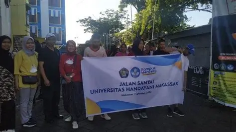

Pengumuman dan Berita
11
Jul 2025
Pengumuman Final – Pelunasan BPP
Pengumuman Final – Pelunasan BPP bagi seluruh mahasiswa Universitas Handayani Makassar. Pastikan Anda tidak melewatkan batas waktu pelunasan.
READ MORE

17
Mei 2025
Mahasiswa Dan Dosen Melakukan Aktivitas Jalan Sehat Bersama
Makassar – Universitas Handayani Makassar kembali menunjukkan komitmennya dalam menerapkan program Pendekatan kepada Mahasiswa dengan melakukan jalan sehat bersama..
READ MORE
05
Jun 2025
Seminar Nasional Teknologi Informasi
Bergabunglah dengan Seminar Nasional Teknologi Informasi yang akan menghadirkan pakar-pakar IT terkemuka membahas tren terbaru.
READ MORE
22
Jul 2025
Mahasiswa Melakukan Uji Coba Membuat Aplikasi Mobile
Kegiatan final mahasiswa digantikan dengan membuat sebuah proyek aplikasi perkelompok masing-masing mendapatkan tanggapan positif dari dosen pembimbing.
READ MORE